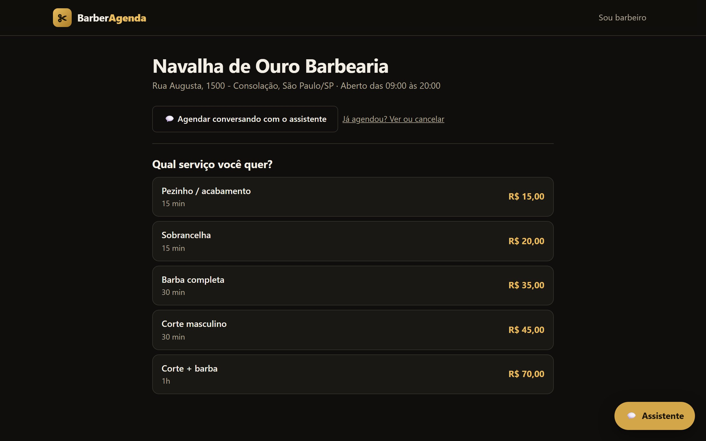
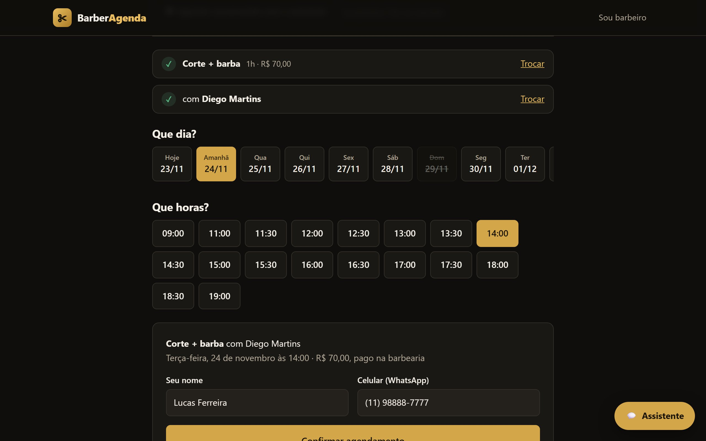
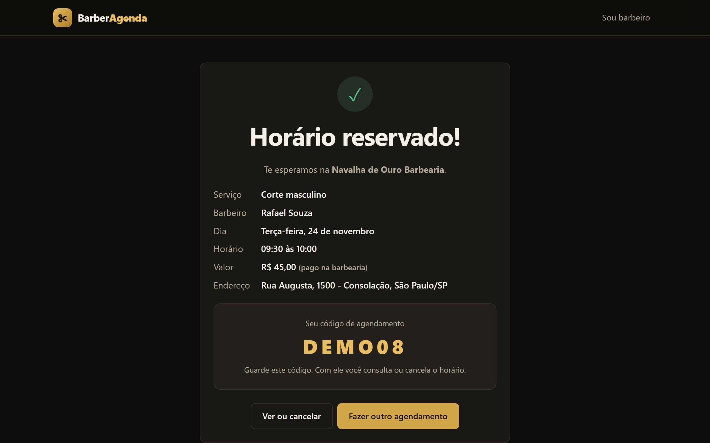
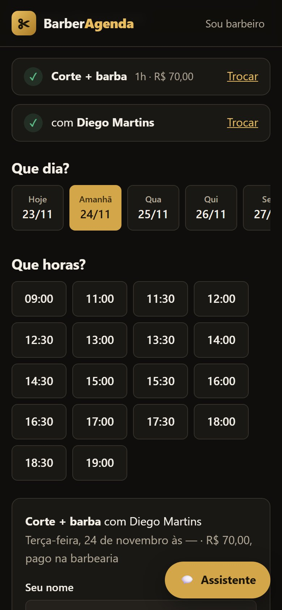

Em muitas barbearias o agendamento ainda é feito por mensagem, ligação ou caderno. Isso causa problemas que se repetem:
o barbeiro interrompe o atendimento para responder mensagens e conferir a agenda;
acontecem horários marcados em dobro e esquecimentos;
o cliente só consegue marcar quando a barbearia responde;
as faltas não são controladas e o dono não sabe quanto faturou no mês.
1.2 Público-alvo
Quem cadastra e administra
Donos de barbearias pequenas e médias que hoje controlam a agenda manualmente.
Quem agenda
Os clientes da barbearia, que marcam pelo celular sem criar conta.
1.3 A proposta
O BarberAgenda é um SaaS (Software as a Service): a barbearia não instala nada, cria uma conta
no site e recebe um link próprio de agendamento. Pelo link, o cliente escolhe o serviço, o barbeiro, o dia
e um horário que realmente está livre, ou conversa com o assistente de IA. O dono acompanha tudo em um
painel. Esta entrega é o MVP, com as funções essenciais para demonstrar a proposta.
1.4 Principais funcionalidades
Para o cliente
Agendamento com uma pergunta por vez, feito para o celular.
Cálculo automático dos horários livres.
Assistente com IA que marca, consulta e cancela pelo chat.
Confirmação com código do agendamento.
Consulta e cancelamento pelo código.
Para a barbearia (painel)
Cadastro da barbearia e login.
Agenda do dia: concluir, marcar falta, cancelar e lembrar pelo WhatsApp.
Cadastro de serviços e de barbeiros.
Horário, intervalo e dias de funcionamento.
Relatórios: faturamento, ticket médio, faltas e rankings.
2Funcionamento do sistema
O fluxo principal é o agendamento feito pelo cliente, que aparece na hora no painel da barbearia.
O cliente abre o link da barbearia e responde uma pergunta por vez, começando pelo serviço.

Figura 1: página de agendamento, primeira pergunta.
Cada escolha vira uma linha-resumo com o link "Trocar". Dias em que a barbearia fecha aparecem riscados.
Só aparecem horários livres. Na figura, o serviço dura 1 hora e o barbeiro já tem um cliente das 10:00 às
11:00, então 09:30, 10:00 e 10:30 não são oferecidos.
O cliente informa nome e celular e confirma.

Figura 2: dia, horários livres calculados pelo sistema e dados do cliente.
O agendamento é confirmado com um código, usado para consultar ou cancelar.

Figura 3: confirmação do agendamento.
O dono vê o horário na agenda do painel e marca cada atendimento como concluído, falta ou cancelado.
Os valores recebido e previsto são calculados automaticamente.
Figura 4: agenda do dia no painel da barbearia (dados fictícios).
No fim do mês, o dono acompanha os resultados nos relatórios.
Figura 5: relatório mensal (dados fictícios).
Regras de negócio garantidas pelo sistema
Um barbeiro não recebe dois clientes no mesmo horário, mesmo que eles confirmem ao mesmo tempo.
Só é possível agendar dentro do expediente e com até 14 dias de antecedência.
O cliente só cancela o que ainda não aconteceu, e o horário cancelado volta a ficar livre.
O preço é gravado no momento do agendamento, então mudar o preço do serviço não altera o histórico.
Serviços e barbeiros são desativados, não apagados, para preservar o histórico.
3Arquitetura
O sistema é uma aplicação web em Java, organizada em três camadas: interface, lógica e armazenamento.
Figura 6: camadas do sistema e comunicação entre as partes.
3.1 Interface
A interface é formada por 13 páginas JSP que geram HTML com os dados do banco. Há uma
área pública (início, cadastro, login, agendamento, confirmação e consulta) e um
painel em web/admin/, protegido por login.
Cabeçalho, menu e chat são fragmentos em WEB-INF/jspf/, incluídos com <%@include%>.
O CSS é responsivo, já que o cliente agenda principalmente pelo celular. O JavaScript cuida
do chat, da máscara de telefone e do avanço automático entre as perguntas.

Figura 7: no celular.
3.2 Lógica da aplicação
A lógica fica em classes Java (src/java/br/com/barbearia), separadas por responsabilidade:
Regras de negócio: horários livres, agendamento sem conflito, cadastro, login e validações.
dao
Acesso ao banco com JDBC e PreparedStatement (padrão DAO).
ia
Assistente: chamada ao OpenRouter e as 7 ferramentas que a IA pode usar.
web
Filtros de login/CSRF e UTF-8, listener de inicialização e ChatServlet.
util
Formatação brasileira, hash de senha, token CSRF e proteção contra XSS.
Cálculo dos horários livres (AgendaService.gerarHorariosLivres)
O sistema percorre o expediente de intervalo em intervalo. Cada horário só é oferecido se o serviço termina antes de
fechar, se o horário ainda não passou e se não há sobreposição com outro atendimento do barbeiro. Há sobreposição quando
início < fimOcupadoefim > inícioOcupado.
3.3 Armazenamento dos dados
Os dados ficam no MySQL, criado por database/barbearia.sql. Todas as barbearias usam o mesmo
banco, e cada registro guarda o barbearia_id do dono. As consultas e alterações são limitadas à barbearia
da sessão ou do link acessado.
Figura 8: modelo de dados. Cada agendamento liga um cliente a um barbeiro e a um serviço.
3.4 Como as partes se comunicam
Caminho de um agendamento, do navegador até o banco:
O cliente escolhe serviço, barbeiro e dia. O navegador envia um GET para agendar.jsp.
agendar.jsp chama AgendaService.horariosDisponiveis(), que busca os horários ocupados pelo
AgendamentoDAO e calcula os livres.
O cliente escolhe um horário, preenche nome e celular e o navegador envia um POST.
AgendaService.agendar() valida os dados, abre uma transação, trava o barbeiro
(SELECT ... FOR UPDATE), confere de novo o horário, grava e faz commit. Se algo falhar, rollback.
O servidor responde com um redirect para confirmacao.jsp, para que recarregar a página
não crie outro agendamento.
O painel consulta a mesma tabela e o novo horário aparece na agenda.
3.5 Tecnologias e por que foram escolhidas
Tecnologia
Uso e justificativa
Java 21, JSP e Servlets
Mesma base de CRUD em JSP que o grupo já conhecia. Gera páginas dinâmicas e separa a lógica em classes.
Apache Tomcat 10.1
Servidor Java leve, gratuito e integrado ao NetBeans.
MySQL + JDBC
Banco relacional com transações e travas, essenciais para evitar horários em dobro.
HTML, CSS e JavaScript
Interface sem frameworks, simples de entender e responsiva.
OpenRouter + Claude Haiku 5.5
IA do assistente por uma API HTTP. O Haiku 5.5 foi escolhido pelo baixo custo, e o modelo pode ser trocado na configuração.
HttpClient + Jackson
Chamada à API e leitura de JSON, sem depender de um framework.
Docker, Caddy e AWS EC2
Publicação na internet com HTTPS automático.
NetBeans, Ant, Git e GitHub
Compilação, controle de versão e trabalho em equipe com branch e pull request.
4Assistente com IA
O cliente pode conversar com um assistente que marca, consulta e cancela horários. Ele escreve como
no WhatsApp ("quero cortar amanhã depois das 17h") e o assistente pergunta o que falta, mostra horários livres,
confirma o resumo e agenda.
O modelo é o Claude Haiku 5.5, acessado pelo OpenRouter com
function calling:
O navegador envia a mensagem para POST /chat (ChatServlet).
O servidor junta o histórico da conversa, guardado na sessão, com as instruções e as ferramentas,
e chama a API.
Se a IA pede uma ferramenta (tool_calls), o servidor a executa no MySQL e devolve o resultado.
O ciclo se repete até a IA responder com texto, que volta ao chat em JSON.
Figura 9: assistente.
4.1 Ferramentas que a IA pode pedir
Ferramenta
O que faz
ver_barbearia
Endereço, telefone, horário, dias de funcionamento e data atual.
listar_servicos, listar_barbeiros
Serviços com duração e preço; barbeiros ativos.
ver_horarios_livres
Horários livres de um serviço em um dia, com o mesmo cálculo da página.
criar_agendamento
Marca o horário. A IA é instruída a pedir a confirmação do cliente antes.
consultar_agendamento, cancelar_agendamento
Busca ou cancela pelo código.
Segurança e custo
A IA só pede ferramentas. Quem executa é o servidor, com as mesmas validações da página, e a barbearia vem
do link acessado, não do que a IA escreve. Por isso ela não marca horário ocupado nem usa dados de outra barbearia.
A chave fica em ia.properties ou em variável de ambiente, fora do Git.
Limites: 40 mensagens por conversa, 1000 caracteres por mensagem e 8 rodadas de ferramentas por resposta.
O uso da API é cobrado por tokens.
5APIs e serviços utilizados
API ou serviço
Tipo
Como é usado
OpenRouter /api/v1/chat/completions
API externa
Envia o histórico e as ferramentas em JSON, por HTTPS, e recebe a resposta do modelo ou o pedido de ferramentas. Autenticação por chave (Bearer).
POST /chat
Endpoint próprio
Recebe b (barbearia) e mensagem. Responde { ok, resposta, agendamento }.
API Servlet (Jakarta)
API do Java
Sessões, filtros, listener e servlet.
JDBC
API do Java
Conexão, consultas e transações no MySQL.
WhatsApp (wa.me)
Link
O painel abre a conversa com o lembrete já escrito. É um link, sem envio automático.
Let's Encrypt, pelo Caddy
Serviço externo
Emite e renova o certificado HTTPS.
DuckDNS
Serviço externo
Nome gratuito do site, apontando para o servidor.
5.1 Exemplo de uma conversa com a API
Pedido simplificado que o servidor envia ao OpenRouter:
{
"model": "anthropic/claude-haiku-5.5",
"messages": [
{ "role": "system", "content": "Você é o assistente de agendamento..." },
{ "role": "user", "content": "[site: agora é Segunda-feira...] Tem horário amanhã?" }
],
"tools": [ { "type": "function", "function": { "name": "ver_horarios_livres", ... } } ],
"max_tokens": 1024
}
Quando precisa de dados, o modelo responde com um pedido de ferramenta, e o servidor devolve o resultado:
IA → tool_calls: ver_horarios_livres { "servico_id": 1, "data": "2026-11-24" }
Servidor → role "tool": { "dia": "Terça-feira, 24 de novembro", "barbeiros": [ ... ] }
IA → "Amanhã tenho 09:00, 11:00 ou 14:00. Qual você prefere?"
6Técnicas aplicadas
Principais técnicas usadas e onde cada uma aparece no código.
Configuração por variáveis de ambiente: senhas e chave da IA ficam no arquivo .env do servidor, fora do Git.
Dados preservados: o banco fica em um volume do Docker e continua após publicar uma versão nova.
Custo: cerca de US$ 13 por mês, hoje pagos com os créditos do plano gratuito da AWS.
Guia completo:deploy/DEPLOY-AWS.md, no repositório.
8Testes realizados
Testes feitos em 23/11/2026 na versão final, em um banco separado com dados fictícios.
O que foi testado
Resultado
12 clientes confirmando o mesmo horário ao mesmo tempo
1 gravado e 11 recusados com aviso.
Agendar, consultar e cancelar
O horário fica ocupado e volta a ficar livre após cancelar.
Telefone inválido
Recusado com mensagem.
Painel sem login
Redirecionado para a tela de login.
Formulário do painel sem token CSRF
Bloqueado (HTTP 403).
Script no nome do cliente (XSS)
Exibido como texto, sem executar.
Injeção de SQL no login
Login recusado.
Uma barbearia alterando dados de outra
Bloqueado.
As 7 ferramentas da IA, executadas direto no banco
Funcionaram e recusaram horário ocupado e código de outra barbearia.
Chat sem chave configurada
Mostra um aviso e o site continua funcionando.
9Como o sistema é oferecido aos clientes
9.1 Gratuito, com um único plano
Para a barbearia: R$ 0
Sem mensalidade e sem cartão de crédito.
Sem limite de barbeiros ou serviços.
Link, agenda, assistente com IA e relatórios inclusos.
Para o cliente: R$ 0
Agenda sem criar conta.
Consulta e cancela pelo código.
Paga o corte direto na barbearia.
Ser gratuito reduz a barreira de entrada para barbearias pequenas e ajuda o sistema a ganhar usuários.
9.2 Como a barbearia chega até o sistema
Divulgação: site, Instagram e parcerias com distribuidores de produtos para barbearia.
Cadastro sozinho (self-service): ao criar a conta, o sistema já cadastra um barbeiro e dois serviços iniciais.
Divulgação do link: a barbearia publica o link, e cada cliente que agenda conhece o sistema.
9.3 Custos e uma possibilidade de cobrança
Os custos são o servidor e o uso da API de IA. Como todas as barbearias dividem o mesmo servidor e o mesmo banco,
cada nova barbearia custa pouco. O que mais cresce com o uso é o assistente.
Possibilidade, mantendo o plano único: cadastro e uso continuam grátis, com uma taxa pequena por
agendamento concluído, por exemplo R$ 0,50, somada no mês e paga por Pix. Exemplo: 300 atendimentos = R$ 150,00.
No MVP, nenhuma cobrança é feita.
10Uso de inteligência artificial no desenvolvimento
10.1 Ferramenta utilizada
Claude Code (Anthropic), com o modelo Claude Opus 5.5: um assistente de programação que lê e
escreve os arquivos do projeto, executa comandos e testa as páginas. Os commits da integração com o OpenRouter e da
publicação na AWS registram a coautoria do Claude Opus 5.5.
10.2 Etapas em que a IA ajudou
Etapa
Como ajudou
Planejamento
Propôs as funcionalidades e a organização em camadas, a partir do tema e da tecnologia definidos pelo grupo.
Programação
Escreveu a maior parte das classes Java, páginas JSP, CSS e JavaScript.
Banco de dados
Criou o script das tabelas e os dados fictícios para teste.
Integração com IA
Criou o assistente e as ferramentas, e depois a migração para o OpenRouter.
Publicação
Ajudou com Docker, Caddy, scripts e o guia da AWS.
Testes
Executou os testes da seção 8 e conferiu as telas.
Documentação
Escreveu o README e este documento, com as decisões e correções do grupo.
10.3 Exemplos concretos
Exemplo 1: erro de acentuação. No navegador, o ícone ✂ aparecia como caracteres estranhos. A IA descobriu que
o web.xml definia UTF-8 só para *.jsp e que os fragmentos *.jspf eram lidos em outra
codificação. A correção foi incluir *.jspf na configuração.
Exemplo 2: dois clientes no mesmo horário. Conferir e depois gravar deixa uma brecha quando dois clientes
confirmam juntos. A IA propôs fazer tudo em uma transação, travando o barbeiro com SELECT ... FOR UPDATE.
O teste com 12 pedidos simultâneos confirmou: só 1 foi gravado.
O grupo é responsável por todo o conteúdo entregue, inclusive as partes produzidas com auxílio da IA.
11Dificuldades, próximos passos e execução
11.1 Principais dificuldades
Horários com serviços de durações diferentes: foi preciso verificar sobreposição de intervalos.
Agendamentos simultâneos: exigiram transação e trava no banco.
Separar os dados de cada barbearia no mesmo banco.
Usar IA com segurança: a IA só pede ferramentas, e o servidor valida tudo.
Custo da IA: o chat foi escrito primeiro para a API da Anthropic (Managed Agents) e depois migrado para o
OpenRouter com o Claude Haiku 5.5, um modelo mais barato.
Acentuação (UTF-8) em páginas, fragmentos, formulários e banco.
Publicar na nuvem em um servidor com pouca memória.
11.2 Próximos passos
Lembrete automático na véspera, por WhatsApp ou e-mail.
Levar o assistente para o WhatsApp da barbearia, com as mesmas ferramentas.
Agenda individual por barbeiro, com folgas e horário de almoço.
Fidelidade de clientes e avaliações após o atendimento.
Domínio próprio e backup automático do banco.
11.3 Como executar
Baixar o projeto: git clone https://github.com/dev-MarcoCoder/Sistema-Barbearia.git
Executar database/barbearia.sql no MySQL. Ele cria as tabelas vazias. Para testar com dados fictícios, executar
também database/dados-demonstracao.sql.
Copiar web/WEB-INF/db.properties.example para db.properties e informar usuário e senha do MySQL.
Opcional: copiar ia.properties.example para ia.properties e colar a chave do OpenRouter.
Abrir no NetBeans, fazer Clean and Build e Run no Tomcat 10.1.
Acessar http://localhost:8080/SistemaBarbearia/ e cadastrar a barbearia em Sou barbeiro.